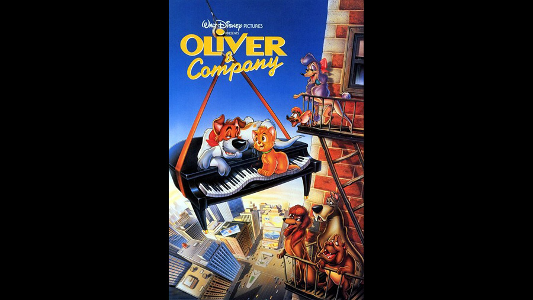

1988

CAST
Oliver: an orange orphaned kitten who is looking for a home. He joins Fagin's gang of dogs before being taken in by Jenny. He also saves her life from the black-hearted loan-shark, Sykes.
-
Joey Lawrence
Fagin: a lowly thief who lives on a barge with his dogs. He desperately needs money to repay his debt with Sykes. Because of his economic situation, he is forced to perform criminal acts such as pick-pocketing and petty theft, but in truth he is well-meaning and genial most of the time.
-
Dom DeLuise
Bill Sykes: a cold-hearted, immoral loan-shark and shipyard agent who lent a considerable sum of money to Fagin and expects it paid back. He is ultimately defeated at the film's climax when he indirectly drives his car into a train, killing him in the process.
-
Robert Loggia
Dodger: a carefree, charismatic mongrel with a mix of terrier in him. He claims to have considerable "street savoir-faire". He is the leader of Fagin's gang of dogs, and is Oliver's first acquaintance, as well as his eventual best friend and bodyguard. He is the object of Rita's affection.
-
Billy Joel
Tito: a tiny yet passionate Chihuahua in Fagin's gang. He has a fiery temper for his size, and rapidly develops a crush on Georgette (although she is initially repulsed by him). His full name is Ignacio Alonso Julio Federico de Tito.
-
Cheech Marin
Einstein: a gray Great Dane and a member of Fagin's gang. He is named ironically as he is not particularly bright, representing the stereotype that Great Danes are friendly but dim-witted.
-
Richard Mulligan
Francis: a bulldog with a British accent in Fagin's gang. He appreciates art and theatre, particularly Shakespeare. He also detests anyone abbreviating his name as "Frank" or "Frankie" (which Tito frequently does).
-
Roscoe Lee Browne
Rita: an Afghan Hound and the only female dog in Fagin's gang. She is street-wise and takes Oliver under her wing.
-
Sheryl Lee Ralph (Ruth Pointer, singing)
Roscoe and DeSoto: Sykes's vicious Doberman Pinschers who have a hostile history with Dodger and his friends. Roscoe is the apparent leader, while his brother DeSoto seems to be the more savage of the two. Both of them are killed in the climax after falling onto the electric rail tracks while fighting with Dodger and Oliver. Roscoe wears a red collar and DeSoto wears one that is blue.
-
Taurean Blacque and Carl Weintraub (respectively)
Jennifer "Jenny" Foxworth: a kind-hearted, rich girl who adopts Oliver.
-
Natalie Gregory (Myhanh Tran, singing)
Winston: the Foxworth family's bumbling but loyal butler.
-
William Glover
Georgette: the Foxworth family's prize-winning poodle. Vain and spoiled, she becomes jealous of Oliver but eventually accepts him and Fagin's gang. When Tito displays his attraction to her, she initially responds with revulsion. At the end, however, she displays considerable attraction to Tito, so much, in fact that she sends him running for his life when she tries to bathe, dress and groom him.
-
Bette Midler
Old Louie: an aggressive, bad-tempered hot dog vendor who appears early in the film when Oliver and Dodger steal his hot dogs. He is described by Dodger as "a well-known enemy of the four-legged world", meaning that he hates both cats and dogs.
-
Frank Welker
CREATIVE TEAM
Director
-
George Scribner
Screenplay
-
Jim Cox
Tim Disney
James Mangold
Tim Disney
James Mangold
BACKGROUND
In this animated update of the classic Oliver Twist tale, Oliver (Joey Lawrence) is an orphaned kitten taken in by a gang of thieving dogs, led by cavalier canine Dodger (Billy Joel) and owned by down-and-out pickpocket Fagin (Dom DeLuise). While pulling a job in the streets of New York City, Oliver winds up being adopted by a rich girl, Jenny (Natalie Gregory), and landing on easy street. But through a series of events, a loan shark (Bill Sykes) threatens the peaceful new arrangement.